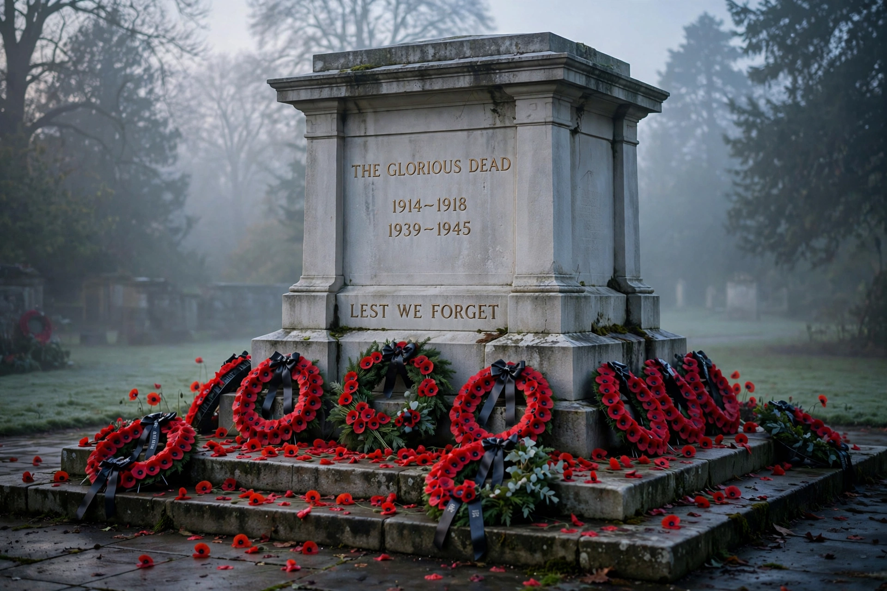

Remembrance Day (also known informally as Poppy Day) is a memorial day observed in Commonwealth member states since the end of the First World War to honour armed forces members who died in the line of duty. It is observed on 11 November, recalling the armistice of 11 November 1918, which took effect 'at the eleventh hour of the eleventh day of the eleventh month'.
A two-minute silence is commonly held at 11 a.m. The red remembrance poppy, inspired by John McCrae's poem 'In Flanders Fields', is worn in the weeks before the day and sold to raise funds for veterans. In the United Kingdom, the National Service of Remembrance is held at the Cenotaph in Whitehall, London, on Remembrance Sunday, the Sunday nearest 11 November.
Canada, Australia and other Commonwealth nations mark the day with ceremonies at war memorials. Related observances include Anzac Day (25 April) in Australia and New Zealand and Veterans Day in the United States, also on 11 November.